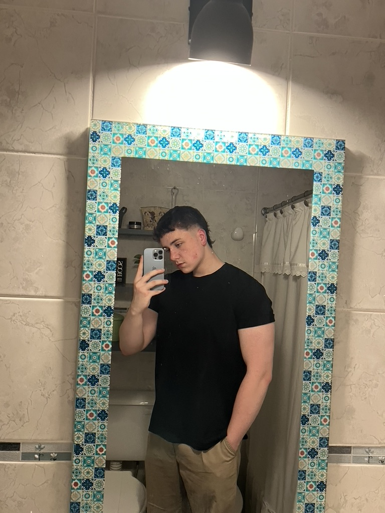

Hola! soy Lucas
estoy encantado de conocerte
Soy un estudiante universitario de 19 años que actualmente cursa en UADE, con un fuerte interés en la tecnología, la programación y el desarrollo de sistemas. Me considero una persona comprometida con mis objetivos, especialmente en el ámbito académico, donde busco entender los temas de manera clara y práctica para poder aplicarlos. En mi tiempo libre, me gusta usar la computadora y aprender cosas nuevas. También valoro mucho mis relaciones personales, especialmente con mi novia, con quien comparto gran parte de mi día a día. Me caracterizo por ser perseverante, curioso y con ganas de progresar tanto en lo profesional como en lo personal.
